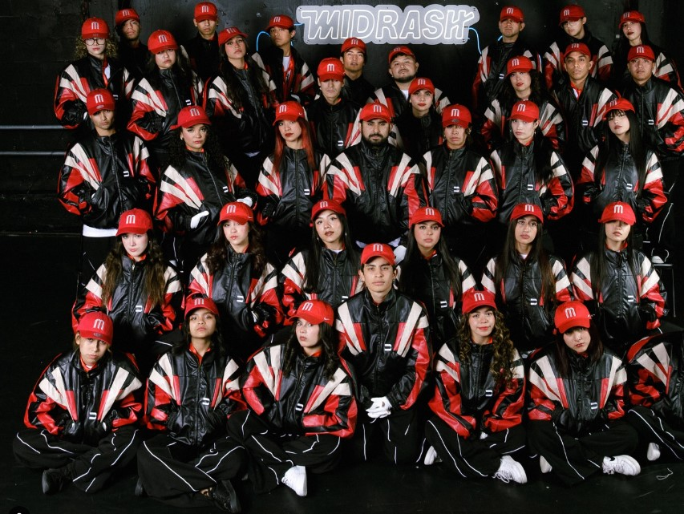
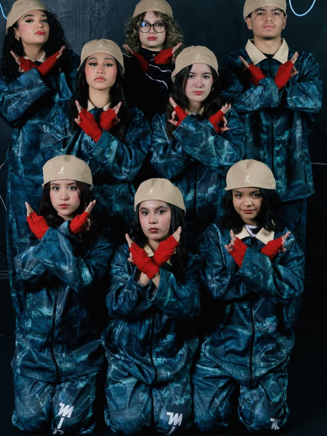
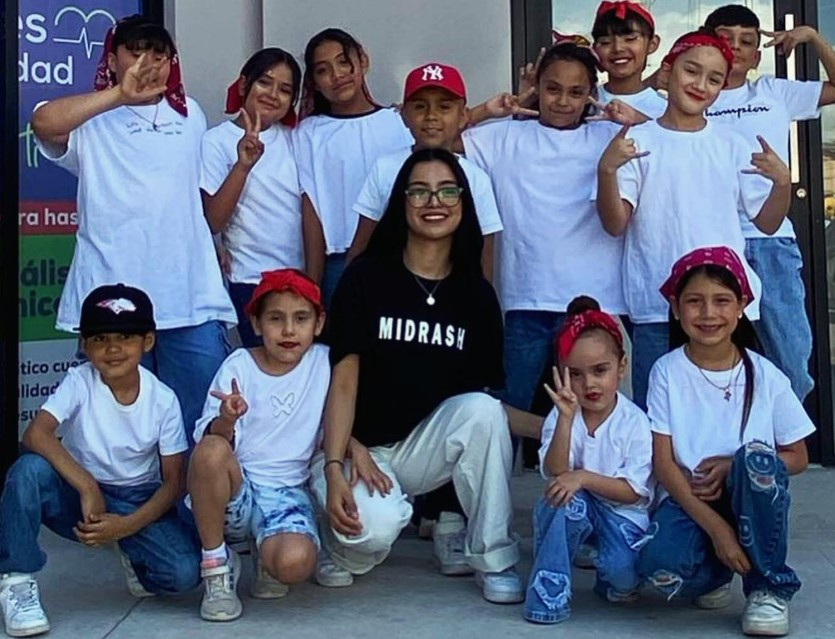

“
“
“
Pas de Rêve es más que una escuela de danza; es un espacio donde el movimiento se convierte en poesía. Con un enfoque en la excelencia técnica y la expresión artística, cultivamos bailarines apasionados que transforman cada paso en un sueño hecho arte. Desde el ballet clásico hasta la danza contemporánea, nuestra enseñanza combina disciplina, sensibilidad y creatividad en un ambiente elegante y acogedor.
Todo lo que hacemos tiene un enfoque de calidad profesional e internacional. Rompemos con los típicos estereotipos del bailarín, reconociendo que el baile es parte de un lenguaje universal y versátil que debe ser accesible para todxs.
Tenemos cursos de iniciación para gente que nunca ha tomado clases. Clases regulares para principiantes e intermedios. Cursos internacionales y nacionales para principianes, intermedios y avanzados/profesionales. Si la oferta de clases que tenemos no resuelve lo que estás buscando, podemos ofrecerte una clase diseñada para ti, en el horario de tu preferencia.



El deseo de compartir y hacer accesible la danza para todas y todos, es el ideal y principal motor de Carolina para crear Pas de Rêve. A través de un amplio horario de clases y el programa de entrenamiento para jóvenes y adultos, con enfoque versátil y de calidad internacional, los y las aspirantes identifican sus fortalezas y áreas de oportunidad, obteniendo las herramientas necesarias para poder desarrollarse al máximo y lograr SU mejor versión, mediante el acompañamiento y seguimiento personalizado de nuestras maestras, maestros y por supuesto la directora. Estando conscientes de nuestra búsqueda hacia una mayor inclusión de rango de perfiles en la danza, ofrecemos: clases, cursos, talleres, clases magistrales y clases particulares, dirigidos a profesionales, aspirantes y aficionados de todos los niveles.
El objetivo de Pas de Rêve y su fundadora es otorgar a los y las aspirantes bases sólidas y más con el fin que puedan seguir desarrollándose de manera independiente, de forma consciente, constante, creativa y responsable con su quehacer y su comunidad hasta transformar sus sueños en realidad.
Contacto/horarios |
Clases/Galería |
Maestros |
Inscripciones |
Jennifer Zapata Hernández (22110950@cobachih.edu.mx)